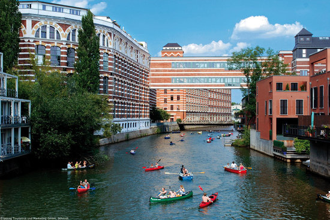
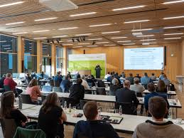
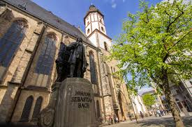
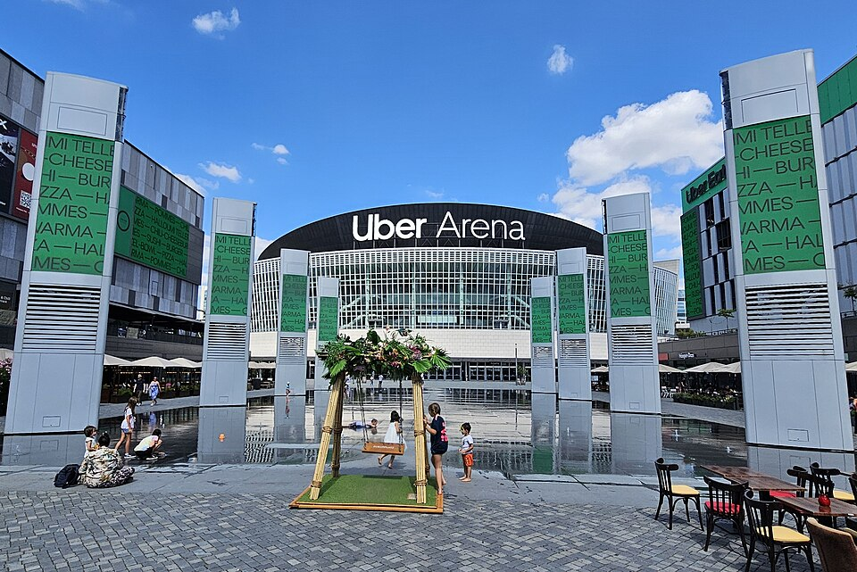
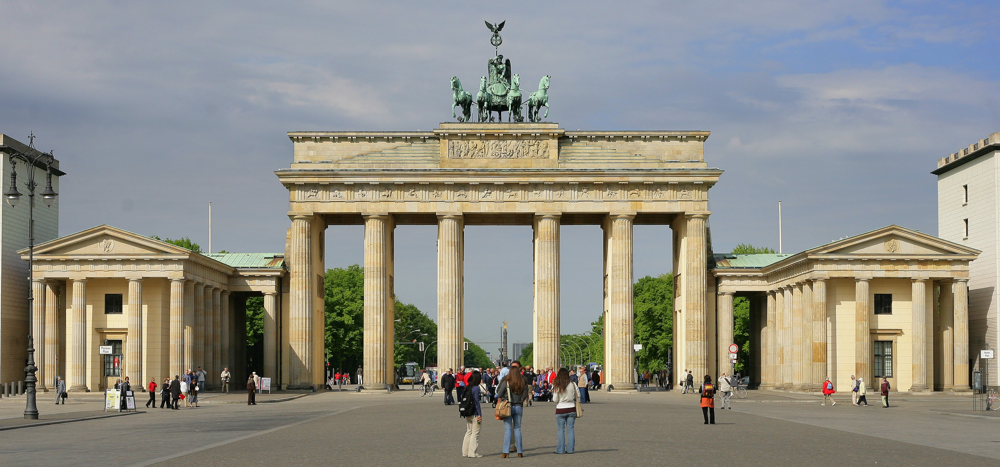
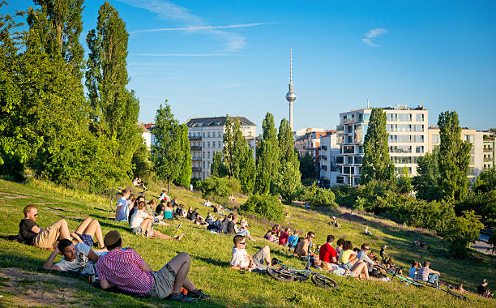
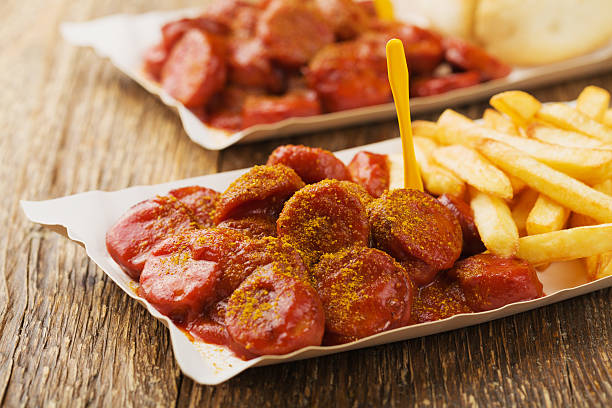
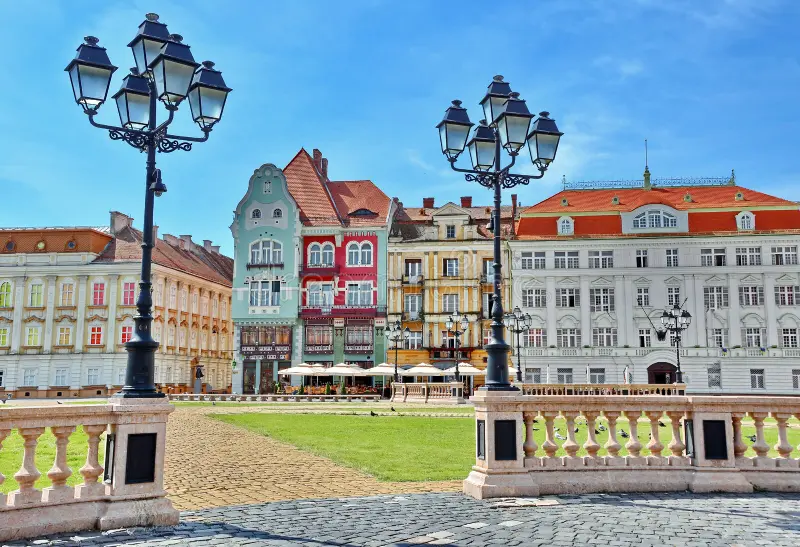
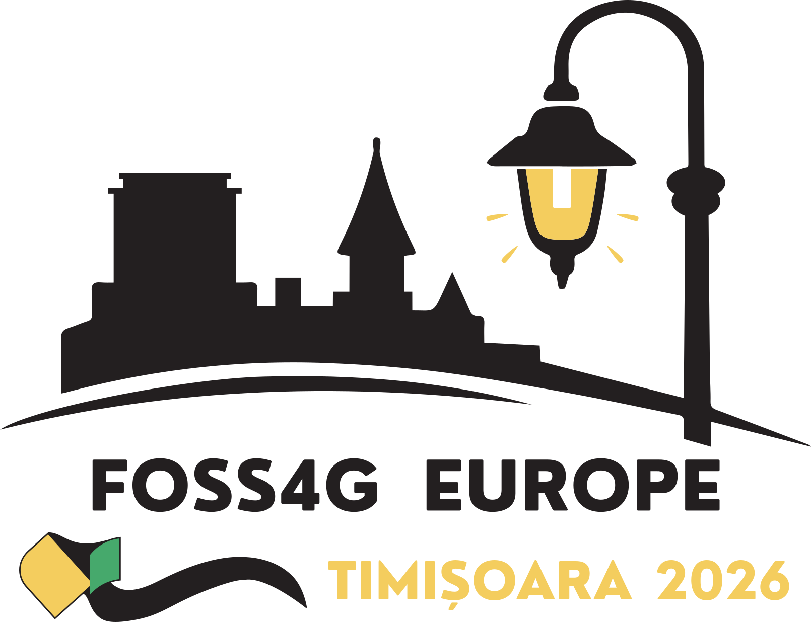
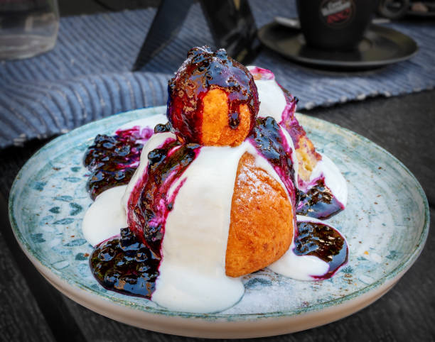

🗺️ Cidades & Recomendações

🚇 Transporte: Pegue o bonde Tram Linha 3 (sentido Taucha ou Sommerfeld) e desça na estação DBFZ / Heiterblick para ir à DBFZ. Utilize o app oficial da Deutsche Bahn (DB Navigator) para horários e bilhetes.
🔬 DBFZ: German Biomass Research Centre. Código de vestimenta acadêmica é o Smart Casual. Reuniões de cooperação científica nos dias 24 e 25 de Junho.
📍 Torgauer Straße 116, 04347 Leipzig
🎯 Roteiro & Visitas (Juntos vs. Sozinha):
- 🧑🤝🧑 Juntos: Visita aos canais de Plagwitz (área hipster, cafés e canais); polo artístico e galerias da Spinnerei; jantar no histórico Auerbachs Keller; Igreja Thomaskirche (túmulo de Bach).
- 👩 Carol Sozinha: Leipzig Zoo (um dos mais famosos da Europa com a estufa gigante Gondwanaland); Museu Bach (Bach Museum Leipzig); Museu de Belas Artes (MdbK); caminhar pelas galerias históricas de compras (Mädlerpassage).

🍽️ Gastronomia: Auerbachs Keller é o restaurante clássico medieval situado na galeria Mädlerpassage. Reserva recomendada. Não deixe de saborear cervejas regionais.
🏛️ Turismo: Igreja Thomaskirche (túmulo e estátua de Bach) e o polo criativo de arte e galerias **Spinnerei**.

⚠️ Alerta: Valide o seu bilhete de transporte nas maquininhas da plataforma antes de subir a bordo do Tram!

🚇 Transporte: Rede BVG de metrô (U-Bahn) e trens (S-Bahn). Bilhete zonas ABC cobre aeroporto e centro. **Importante:** A validação é obrigatória. Não validar acarreta multa de €60 cobrada por fiscais à paisana.
⚔️ Uber Arena (Show do Critical Role - 06 Jul, Seg):
📍 Uber-Platz 1, 10243 Berlin
• Mochilas grandes são proibidas! Levar apenas bolsas muito pequenas (folha A4 ou menor).
• Portões abrem às 18h. Chegue 1h mais cedo se quiser garantir o merchandising oficial sem filas. Show começa às 20h.
• Estação de metrô mais próxima: Warschauer Straße.
📅 Cronograma de Passeios por Dia:
- 26 Jun (Sex): Chegada, check-in no Garner Hotel. Tarde/Noite: Explorar Alexanderplatz, subir na Torre de TV (Fernsehturm) e jantar nos arredores.
- 27 Jun (Sáb): Roteiro Histórico Central: Portão de Brandemburgo, Reichstag, Memorial do Holocausto, Checkpoint Charlie (ao lado do hotel), East Side Gallery (Muro) e bares/comida em Kreuzberg à noite.
- 05 Jul (Dom): Chegada do voo de Timișoara, check-in no Park Inn. Passeio à noite por Alexanderplatz e arredores.
- 06 Jul (Seg): DIA DO SHOW: manha tranquila (café EINSTEIN e Tiergarten/Siegessäule), tarde de compras leves perto do Alexa e descanso. Noite: chegar cedo na Uber Arena (portoes 18h) para o Critical Role Live as 20h.
- 07 Jul (Ter): Museus e Compras: Ilha dos Museus (Neues Museum, Nefertiti), caminhar pela Unter den Linden, sneakers (SNS, Fair Catch) e Türkenmarkt em Kreuzberg (terca). Jantar no NOVEMBER ou MaMi's (reservar).
🏛️ Roteiro Histórico: East Side Gallery (Muro de Berlim), Checkpoint Charlie, Memorial do Holocausto e Reichstag (reserva grátis obrigatória online semanas antes).

🎨 Lazer & Alternativo: Mauerpark aos domingos (feira de pulgas e o famoso karaokê público ao ar livre no anfiteatro) e os charmosos pátios de Hackesche Höfe.

🌭 Comida Rápida: Currywurst no Konnopke's Imbiss e o famoso Kebab turco no Mustafa's Gemüse Kebap.



✈️ Aeroporto: Aeroporto Traian Vuia (TSR). Táxis autorizados até o centro custam aproximadamente 25 RON. Verifique o taxímetro.
🌍 FOSS4G Europe 2026: Regional Business Centre CRAFT. O polo de discussão cartográfica e geotecnologia livre.
📍 Bulevardul Eroilor de la Tisa 22, 300575 Timișoara
🎯 Roteiro & Visitas (Juntos vs. Sozinha):
- 🧑🤝🧑 Juntos: Piața Unirii (arquitetura barroca colorida); Piața Victoriei e Catedral Metropolitana; passeio de barco público pelo Rio Bega por 3 RON; piquenique no Roses Park; social tour à Vinícola Recaș no sábado.
- 👩 Carol Sozinha (durante palestras): Museu de Arte de Timișoara (no Palácio Barroco da Piața Unirii); Theresia Bastion (antigo bastião com cafés); Museu do Consumidor Comunista (apartamento vintage pré-1989 muito interativo); compras no shopping e complexo Iulius Town.
🏰 Atrações e Excursões para o Sábado (04 Jul):
- Vinícola Recaș (Cramele Recaș): Visita à enorme vinícola a 25km de Timișoara (incluso no ticket WJMPS). Ótimos vinhos romenos e belas plantações.
- Banat Village Museum (Muzeul Satului Bănățean): Museu etnográfico ao ar livre nos arredores da cidade, com casas históricas reais de madeira e palha reconstruídas.
- Castelo Corvin (Castelul Corvinilor): Castelo medieval gótico de Hunedoara (aprox. 2h de carro/trem) - um dos mais imponentes e misteriosos de toda a Europa.

🏛️ Turismo Histórico: Praça da União (Piața Unirii, de arquitetura barroca austríaca), Piața Victoriei e o agradável Parque das Rosas (Parcul Rozelor).
⛴️ Passeio no Rio Bega: Timișoara tem barcos públicos confortáveis de passageiros navegando pelo rio por apenas 3 RON por bilhete!

🍽️ Gastronomia: Experimente Mici (rolinhos de carne moída grelhados com mostarda), Sarmale com polenta cremosa e a sobremesa tradicional romena Papanași (peça um para dividir!).


💳 Dica de Dinheiro: Sacar Leu Romeno (RON) apenas em ATMs dentro de agências bancárias locais. Nunca utilize caixas eletrônicos Euronet devido às taxas abusivas.
🇨🇦 eTA Canadense: brasileiros que saírem do aeroporto precisam do eTA eletrônico. Solicitar em canada.ca/eta (~CAD $7) com antecedencia. Sem eTA, sem saída do aeroporto.
✈️ Aeroporto YUL para o centro: taxi ou Uber, ~25-30 min, ~CAD $45-55. Guarde pelo menos 2h de folga para voltar antes do embarque.
🗺️ Roteiro para ~5h aproveitaveis:
- Imigracao canadense e retirada de bagagem (se houver)
- Basilique Notre-Dame: interior azul e dourado deslumbrante, ~CAD $16. Abre 9h.
- Vieux-Montreal: ruas de paralelepipedo, Place d'Armes
- Poutine ou smoked meat num restaurante local
- Retorno ao YUL com 2h de folga
🍁 Para comer: Poutine (fritas, queijo coalho e molho) e Smoked Meat (sanduiche de carne defumada estilo Montreal).
💰 Moeda: Dolar Canadense (CAD). Cartao em todo lugar. Gorjeta de ~15-18% em restaurantes.
⚠️ O eTA canadense e diferente do visto americano. Aplique antes da viagem em canada.ca/eta.